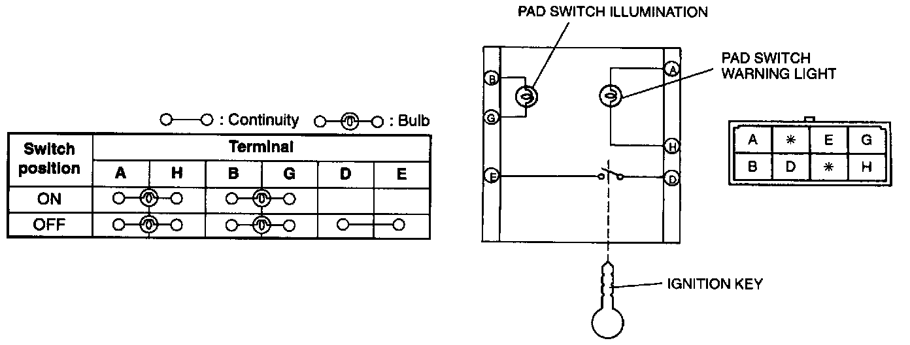

Passenger Air Bag Deactivation (PAD) Switch

1. Disconnect the negative battery cable.
2. Remove the center panel. (Refer to CENTER PANEL REMOVAL/INSTALLATION.)
3. Confirm that the PAD switch warning light bulb and the PAD switch illumination bulb are okay.
4. If the bulbs go out, replace them with new ones.
5. Inspect for continuity between PAD switch terminals by using an ohmmeter.
6. If not as specified, replace the PAD switch.